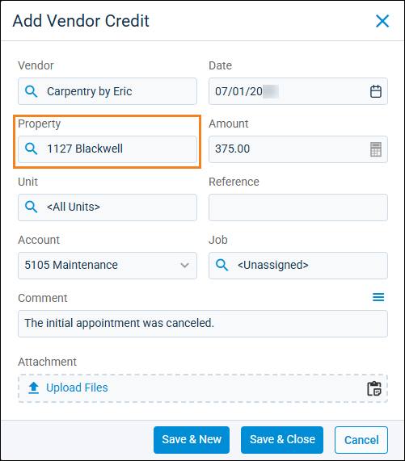
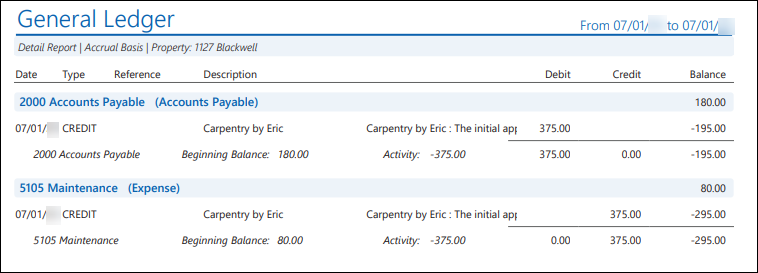
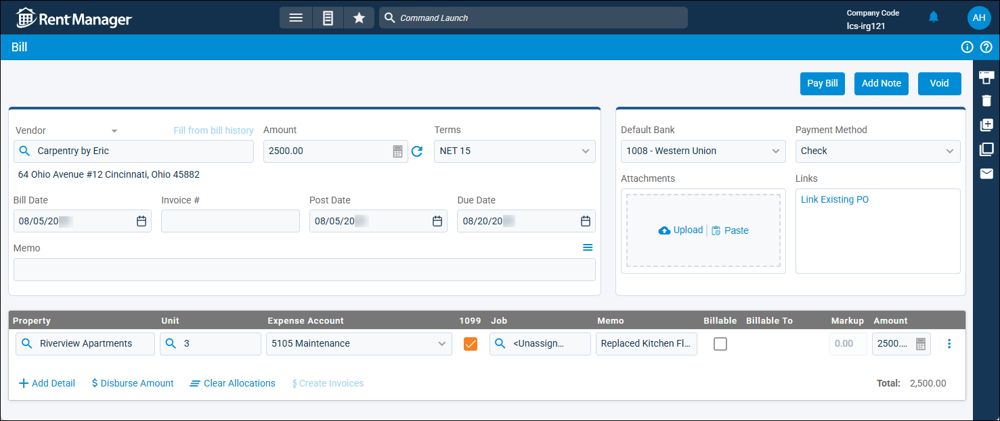
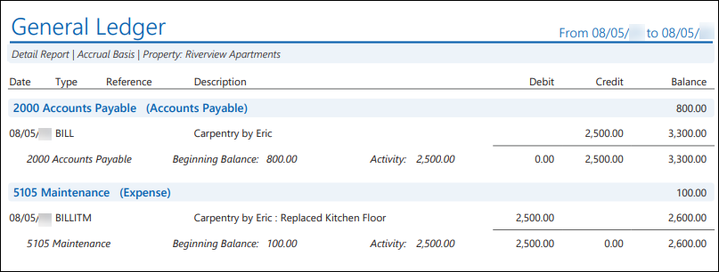

Source: https://rmxhelp.rentmanager.com/Topics/Express/KB/Vendor-Credits-Accrual-Basis.htm
Vendor Credits in Accrual Basis Accounting
Vendors can give you credits for various reasons, such as when you overpay a bill, when services are not performed, or when goods are not available. Vendor credits are handled differently in Rent Manager when using accrual based accounting depending on your system preferences and how they are applied. Rent Manager allows you to choose whether or not credits can be applied to bills at different properties. This option can be selected on an individual credit basis or it can be enforced at the system level.
Related Preferences
To enforce vendor credits to apply only to bills for the same property at the system level, check Prevent vendor credits from being applied across properties in system preferences. For more information, refer to Checks/Bills General (System Preferences).
Related Privileges
| Group | Privilege | Column |
|---|---|---|
| Payables | Vendor credits | View |
For more information, refer to Control User Access.
Option 1: Accrual Accounting for Credit Allocations
When handling the allocation of vendor credits, you have the option to allocate credits to the property listed on the credit or to a different property. For example, if you do not restrict the credits by property, then a vendor credit created and allocated to Property A can be applied to a bill from that vendor for Property B. If you do restrict credits by property, then a vendor credit created and allocated to Property A can only be applied to a bill from that vendor for Property A.
The headings below explain the process of how a vendor credit applied to a bill affects your GL accounts when you are using an accrual accounting basis.
Part 1: The Vendor Credit
In the example below, the vendor Carpentry by Eric issued a credit of $375 for a canceled maintenance appointment at 1127 Blackwell to be used on any future bill. The credit was created for 1127 Blackwell in July.

The resulting credit decreases the 5105 Maintenance expense account and 2000 Accounts Payable GL account for 1127 Blackwell. The credit displays as an entry on the General Ledger report for 1127 Blackwell, as shown below.

Part 2: The Vendor Bill
In August, Carpentry by Eric billed for services at a different property, Riverview Apartments.

The bill created an entry in the General Ledger report to increase the 5105 Maintenance expense account and 2000 Accounts Payable GL account for Riverview Apartments, as shown below.

Part 3: The Credit is Allocated to the Bill
The $375 credit issued to 1127 Blackwell was then allocated to the bill created for Riverview Apartments. This allocation was recorded in Rent Manager as entries in the general ledger report for both 1127 Blackwell and Riverview Apartments.
For 1127 Blackwell, the impact of the original credit was reversed with an entry to increase the 2000 Accounts Payable GL account and increase the 5105 Maintenance expense account. The net effect of the entry of the credit and its allocation to another property is $0.00 to 1127 Blackwell.
For Riverview Apartments, the credit allocation creates an entry to reduce the 2000 Accounts Payable GL account and reduce the 5105 Maintenance expense account for the property.
Option 2: Accrual Accounting for Expense Allocations
When working with expense allocations in Rent Manager, you have the option to create vendor credits using one account and apply that same credit to a open bill that has a different expense allocation. As a result, the general ledger impact of the credit stays in the expense account allocated on the credit. The following example continues with vendor Carpentry by Eric.
After completing the work at Riverview Apartments, Carpentry by Eric issues a credit for materials purchased for the property that were not used. A credit for $200 was entered into Rent Manager using the 6402 Materials expense account.
Prior to the credit being issued, a bill for that vendor was already open and pending payment under the 5105 Maintenance GL expense account. To pay for this bill, the vendor credit issued for Riverview Apartments under the 6402 Materials expense account is applied to the open bill that was created using the 5105 Maintenance GL expense account. The result of these transactions is a $200 increase in 5105 Maintenance expense from the bill and a $200 reduction in 6402 Materials expense GL account as a result of the credit.